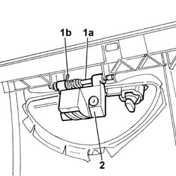

7040A32 FLAP HANDLE - R R
- Path
- Procedures > 70 FITTINGS > 7040 BODY INTERIOR FITTINGS AND TRIM > 7040A PASSENGER COMPARTMENT TRIMS > 7040A32 FLAP HANDLE - R R
- Kind
- repair procedure (removal / refitting; the operation number is the code)
- Applies to
- all engines; all production periods
- Interactive page
- https://sloeber94.github.io/elrnDB-fUlss/en/#/179007785
Applies to: all engines; all production periods
 Removing
Removing
 Refitting
RefittingOp. 5530B56 BATTERY DRIP TRAY COVER - R.R.
- Disconnect the negative battery terminal.
Op. 7040H29 FRONT PILLAR LOWER COVER (ONE), LEFT OR RIGHT - R.R.
Op. 7040A44 SEAT INTERIOR GUARD - R R
Op. 7040G22 FACIA COMPARTMENT LIGHT SWITCH/BULB HOLDER - R+R
Op. 7040A31 FLAP ASSEMBLY - R R
Op. 7040A14 FLAP OF GLOVE COMPARTMENT TRIM ELEMENT (ONE) - ARRANGE
1. Using a suitable tool, remove the fastening pin (1a) and keep the spring (1b).
2. Remove the glove compartment flap handle complete with lock.

Applies to: all engines; all production periods
Refitting
Removing- Position the glove compartment flap handle complete with lock.
- Fit the spring and the fixing pin.
Op. 7040A14 FLAP OF GLOVE COMPARTMENT TRIM ELEMENT (ONE) - ARRANGE
Op. 7040A31 FLAP ASSEMBLY - R R
Op. 7040A44 SEAT INTERIOR GUARD - R R
Op. 7040G22 FACIA COMPARTMENT LIGHT SWITCH/BULB HOLDER - R+R
Op. 7040H29 FRONT PILLAR LOWER COVER (ONE), LEFT OR RIGHT - R.R.
- Connect the negative battery terminal.
Topics linked from this page (6)
- 5530B56 BATTERY DRIP TRAY COVER - R.R.
- 7040A14 FLAP OF GLOVE COMPARTMENT TRIM ELEMENT (ONE) - ARRANGE
- 7040A31 FLAP ASSEMBLY - R R
- 7040A44 SEAT INTERIOR GUARD - R R
- 7040G22 FACIA COMPARTMENT LIGHT SWITCH/BULB HOLDER - R+R
- 7040H29 FRONT PILLAR LOWER COVER (ONE), LEFT OR RIGHT - R.R.